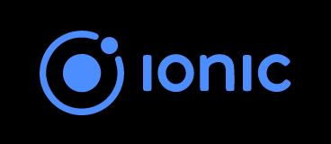
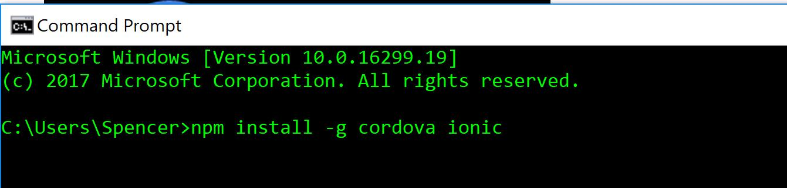
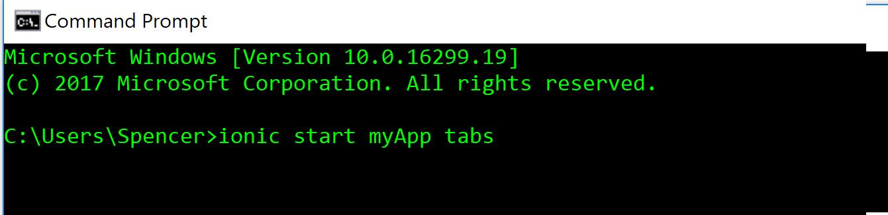

Crossplatform Software Development
Cross-platform mobile application development is the approach to the development
of mobile applications that can be used on multiple mobile platforms.
For cross-platform mobile application development, three different approaches are adopted:
Native Application Development (NAD), Web-based Application Development (WAD)
and Hybrid Application Development (HAD).
Iteration
Go back
Deliverables for each iteration
If there are more stories and todo list go to next Iteration
If no stories and todo list go to end
Ionic Tutorial
For Cross.Platform Mobile Software Development

Getting Started:
Install Node JS:
https://nodejs.org/en/download/
Download the ionic cordova packing using npm at the command line:

Initialize a project from a template:

Details:
Ionic can be used for cross platform mobile development. By writing code in the native for one platform it can be transformed to be used for other platforms as well.
Requirements :
If developing for Android you will need Android Studio nd Java JDK in order to write and deploy the application.
If developing for IOS you will need an Apple Developer account, Xcode 7 or higer and iOS 9 or higher device.
Note: Application can be deployed only if these requirements are fullfilled.
If you have a windows device and wish to write applications for iOS you would have to install a Virtual Machine like VMware and install MacOS in it. Following this you would have to install Xcode and continue the development. Further information can be found here .
Detalied information regarding the requirements and how to get started are in the page: The requirements are written here.